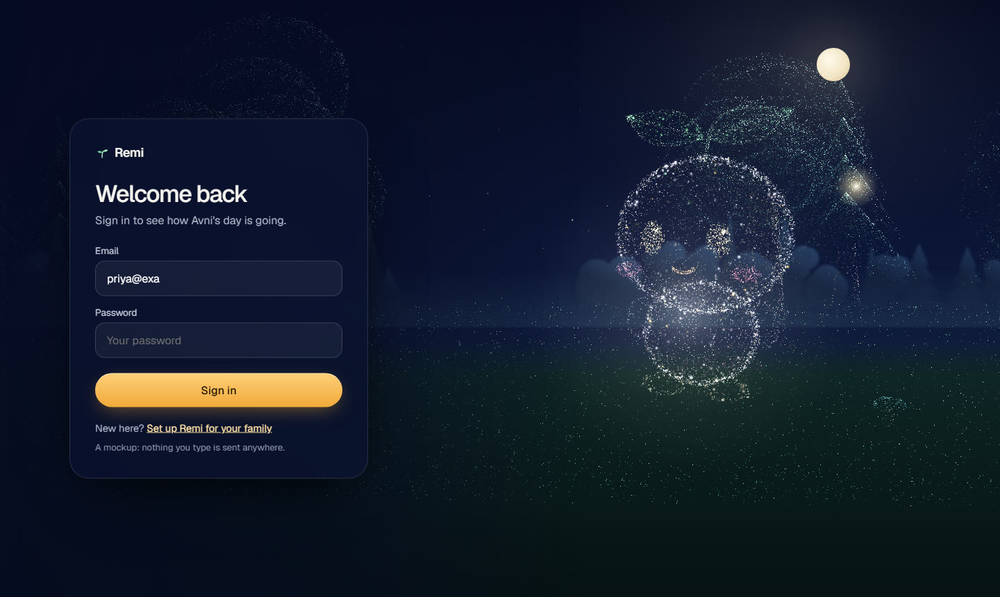
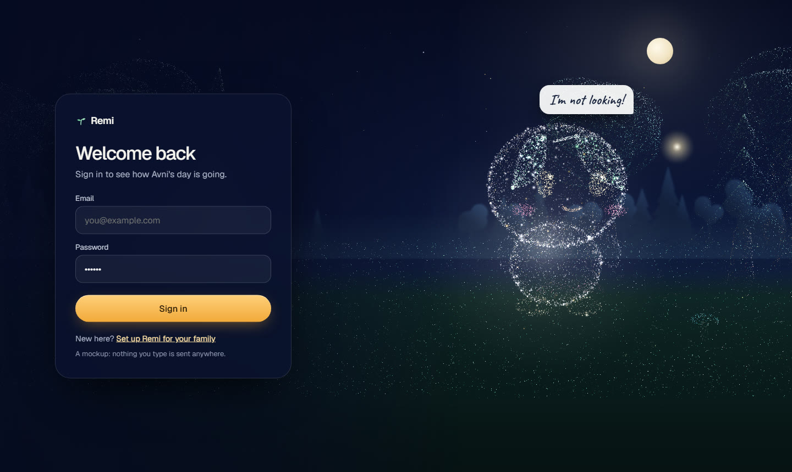

One playful idea per page, each one also useful. Try A: click into the email box and type, then click the password box.
A · Sign-inThe living forest. Remi watches you type your email, and covers his eyes with his leaves while you type the password.

Typing the email: Remi turns and watches the letters appear.

Typing the password: he faces you and covers his eyes with his leaves.
Try the live sign-in ↗Opens in a new tab. Click the email box and type, then the password box.
B · Family portal, by dayHer day as a walk through the forest: lit lanterns are done, fireflies are conversations, Remi stands at "now"
C · The same page after 7 pmThe walk at dusk, every lantern lit; tonight's letter from Remi has arrived
D · Tablet"My day" as stepping stones; "Who is this?" as a photo with Remi peeking over it
‹ Back
Rohan
your grandson · he visited on Sunday
Tablet text stays at least 20px and nothing relies on colour alone: done stones carry a tick, the current one glows gold with Remi sitting beside it and says "now".